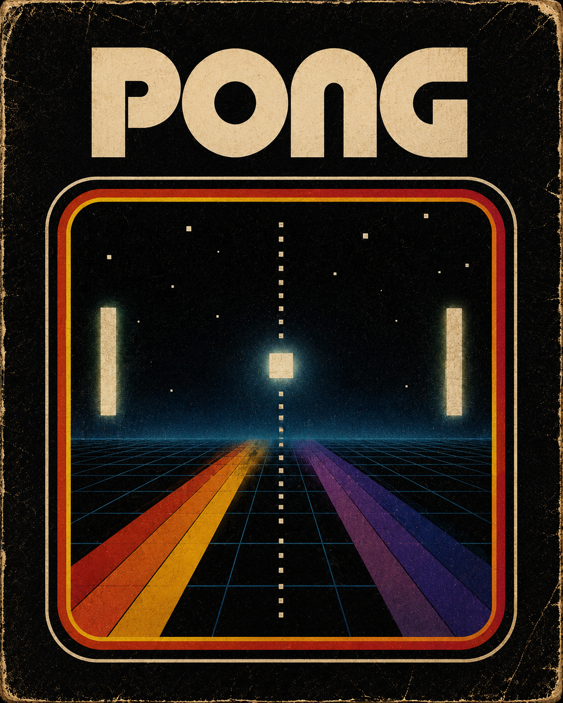
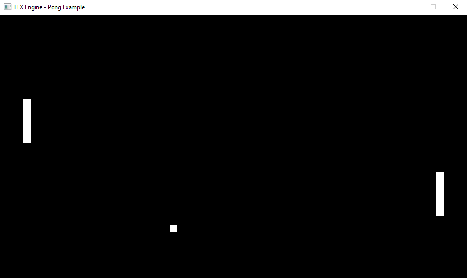
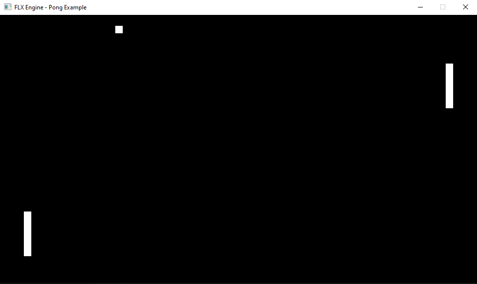
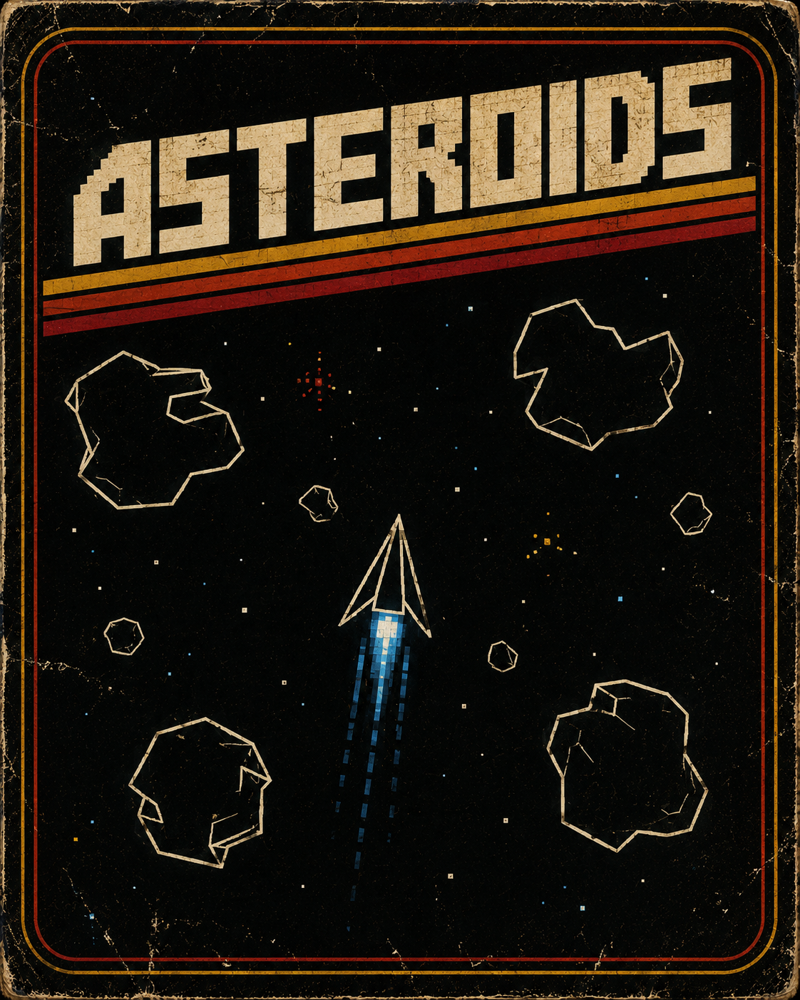
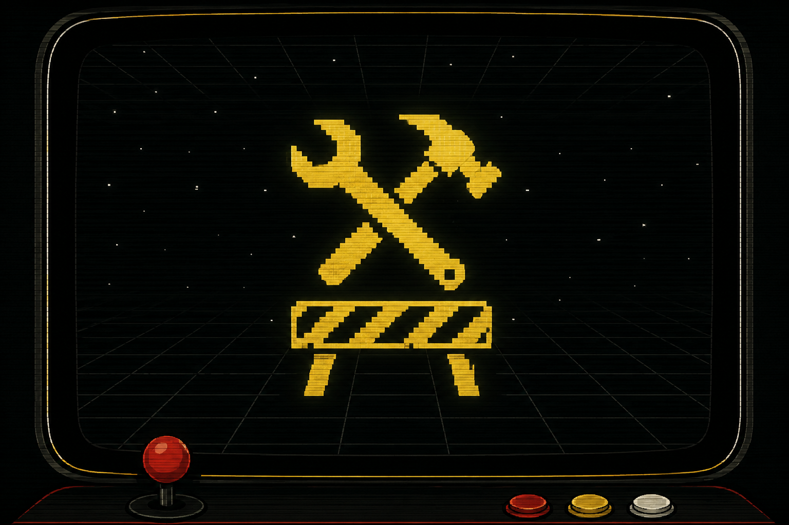
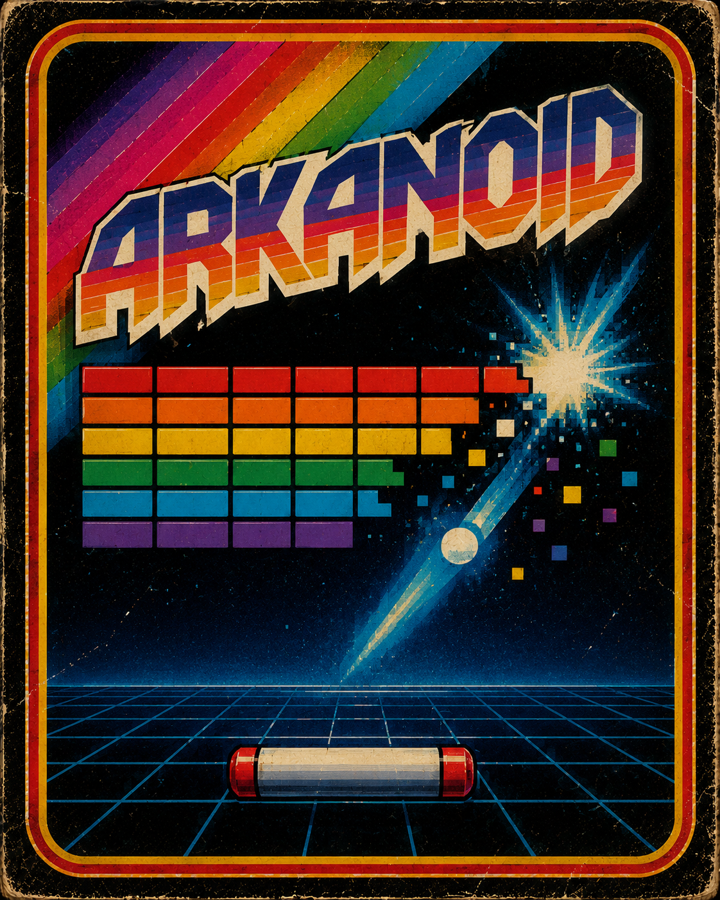

FLX Documentation
Ejemplos
Los ejemplos de FLX no son únicamente demostraciones visuales.
Cada proyecto existe para validar partes concretas del runtime, descubrir problemas reales y ayudar a definir la arquitectura del engine mediante casos prácticos.
Cada ejemplo representa una etapa distinta en la evolución de FLX.
Listo
Pong
Dos barras. Una pelota. El inicio de todo.



Pong fue el primer ejemplo utilizado para construir la base del runtime.
Aunque visualmente sencillo, permitió validar el ciclo de vida, movimiento básico, colisiones, rebotes, scripting y la arquitectura inicial del motor.
Qué se puede aprender
- Estructura básica de un proyecto FLX
- Movimiento clásico basado en speed
- Colisiones simples
- Input y scripting
- IA básica
En desarrollo
Asteroids
Inercia, rotación y caos espacial.


Asteroids representa la segunda gran fase de evolución del runtime.
Este ejemplo introduce movimiento avanzado, aceleración, inercia, rotación, wrapping, spawns dinámicos y prefabs reutilizables.
También está sirviendo para consolidar la documentación, las APIs y las convenciones internas del engine.
Qué se puede aprender
- Sistema motion avanzado
- Rotación y convención angular FLX
- Spawn y prefabs
- Wrap screen
- Movimiento basado en aceleración
- Arquitectura runtime más compleja
Planificado
Arkanoid
Rebotes, power ups y reglas emergentes.

Arkanoid será utilizado para validar sistemas más complejos relacionados con estado, niveles y control del runtime.
Este ejemplo permitirá desarrollar: temporizadores, power ups, sonidos, reglas de spawn y cambios dinámicos de estado.
Qué se puede aprender
- Sistemas de estado
- Niveles y progresión
- Power ups
- Temporizadores
- Spawn basado en reglas
- Gestión de sonido
Ruta recomendada
La documentación está organizada para introducir los conceptos progresivamente.
Puedes navegar libremente, pero el recorrido recomendado es:
- ↓ Introducción
- ↓ Cómo piensa FLX
- ↓ Filosofía
- ↓ Conceptos básicos
- ↓ Primeros pasos
- ↓ Scripting
- ↓ Referencia JSON
- ↓ FLX API
- ↓ Ejemplos ← Estás aquí
- ¿Cómo hacer...? → Recomendado
- ↓ Roadmap